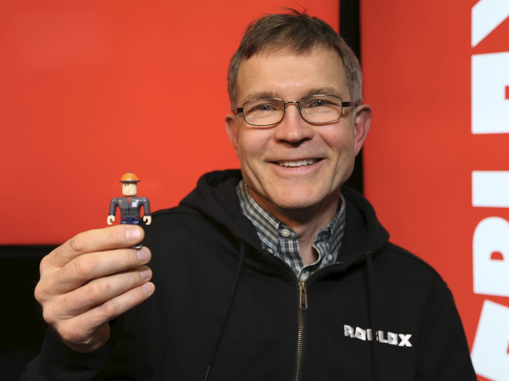

The creator
In 2004, Baszucki, along with Erik Cassel – who worked as Baszucki's VP of Engineering for Interactive Physics – began working on an early prototype of Roblox under the working title DynaBlocks. It was later renamed Roblox, a portmanteau of "robots" and "blocks", in 2005. The website officially launched in 2006. In a June 2016 interview with Forbes, Baszucki stated that the idea for Roblox was inspired by the success of his Interactive Physics and Working Model software applications, especially among young students. In a December 2016 interview with VentureBeat, Baszucki said, “We believe we’re starting to see a network effect. Retention is getting higher as more people come to play with their friends and have a better chance of finding their friends.” Baszucki believes that Roblox is ushering in a new “human co-experience” category that will become larger than gaming. In a September 2018 interview with Forbes, Baszucki said, "Right when we started, we imagined a new category of people doing things together. A category that involved friends, like social networking; a category that involved immersive 3-D, like gaming; a category that involved cool content, like a media company; and finally a category that had unlimited creation, like a building toy.” Baszucki owns a roughly 13% stake in the Roblox Corporation, the company that owns Roblox, a stake estimated to be worth roughly $4.2 billion. He intends to use donate any net proceeds he earns from Roblox's listing on the New York Stock Exchange to philanthropic purposes. In December 2021, a New York Times investigation alleged that he and his relatives used a tax break intended for small business investors in order to legally avoid tens of millions of dollars in capital gains taxes.